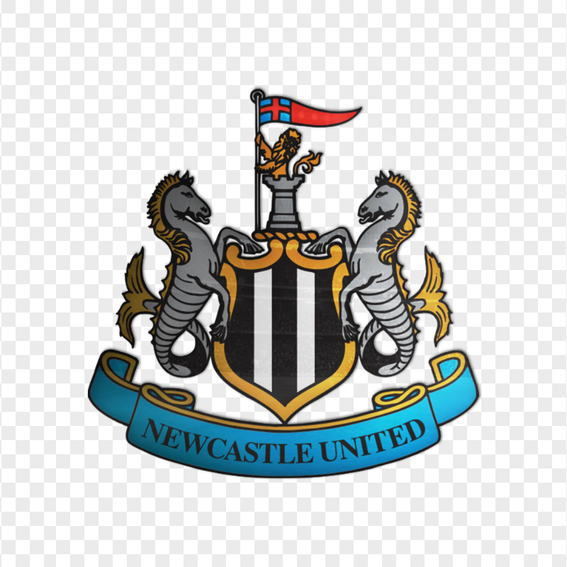
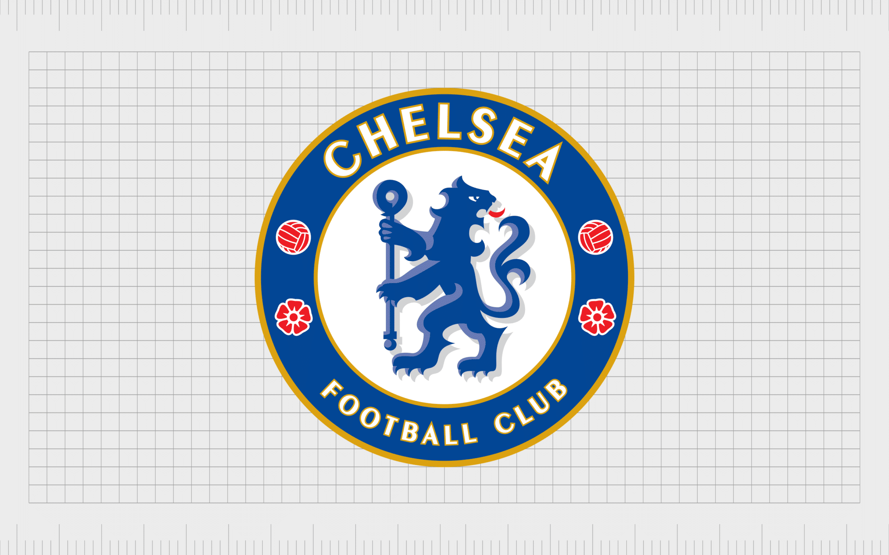
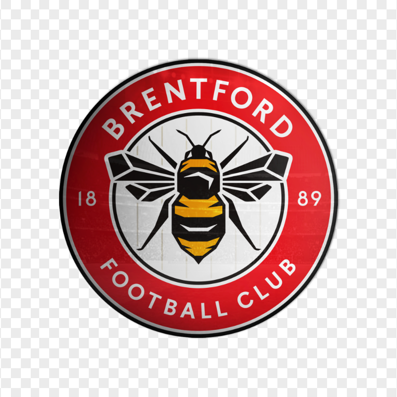
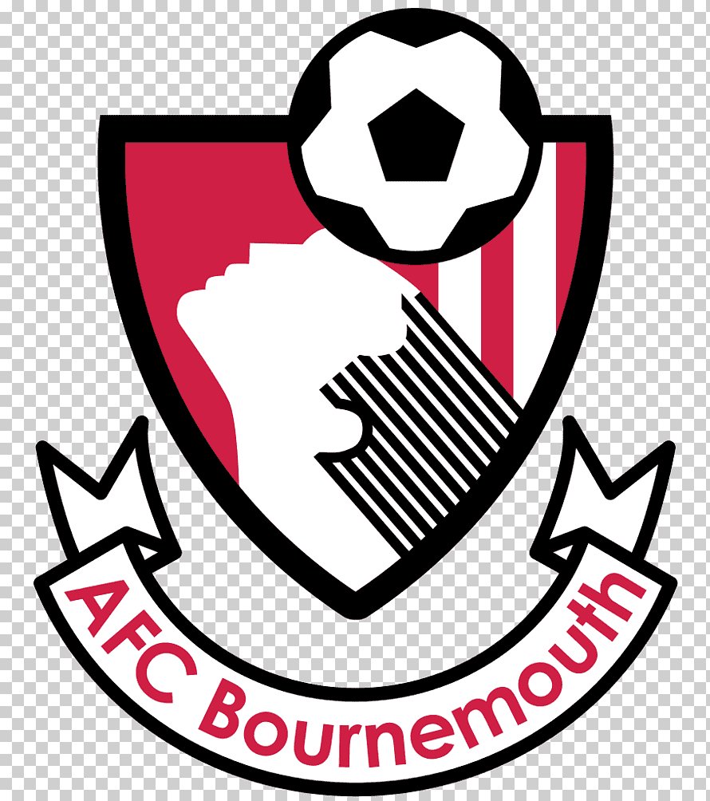
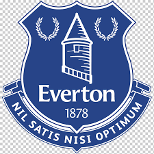
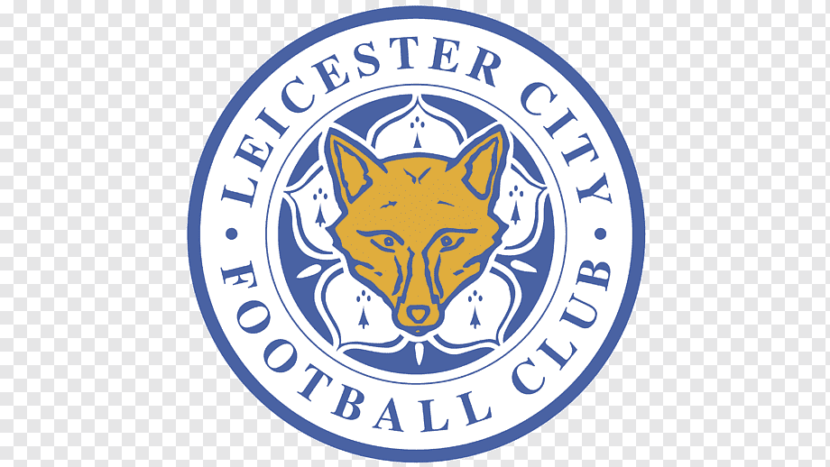

Bienvenidos a la Premier League
La Premier League es la amxima categoria del sistema de ligas del futbol Inglés. Participan 20 clubes y la temporada se extiende de Agosto a Mayo.
Historia de la Premier League
La Premier League fue fundada en 1992, cuando los clubes de la Football League First Division decidieron separarse de la Football League, que había sido creada en 1888. Desde entonces, la Premier League ha crecido en popularidad y se ha convertido en una de las ligas más seguidas del mundo.
Equipos
- Liverpool

- Arsenal

- Manchester City

- Newcastle 
- Chelsea 
- Aston Villa

- Nott'm Forest

- Brentford 
- Brighton

- Bournemounth 
- Fulham

- Crystal Palace

- Everton 
- Wolverhampton

- Manchester United

- Tottenham

- West Ham

- Ipswich

- Leicester City 
- Southampton